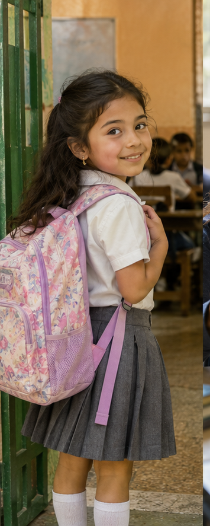
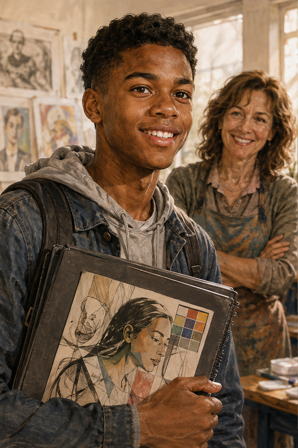

My education story
School years, important people and the path I took.
Aula 3 • Student Book
Today I can
- I can understand simple information about someone’s education.
- I can recognize common irregular past verbs.
- I can use regular and irregular past verbs.
- I can ask questions about school and college.
- I can describe some important stages of my education.
Look at Maya’s education snapshots.
A. Remember Maya
- Where did Maya live as a child?
- What was she like?
- Did she like school?
- What did she study?
B. Match the stage
| Snapshot | Stage |
|---|---|
| 1 | |
| 2 | |
| 3 |
Build useful phrases for an education story.
A. Build the phrase
| Verb | Complement |
|---|---|
| start | school |
| go to | high school / college / university |
| study | English / science / computer science |
| have | classes |
| get | good grades |
| meet | classmates |
| make | friends |
| graduate from | high school |
| finish | college |
B. Match to the picture
Write the best chunk next to each scene: start school • study science • have classes • get good grades • meet classmates • make friends • graduate from high school • go to college.
Some past verbs use -ed. Others change form.
| REGULAR • Base | Past | IRREGULAR • Base | Past |
|---|---|---|---|
| start | started | go | went |
| study | studied | have | had |
| finish | finished | get | got |
| graduate | graduated | meet | met |
| make | made | ||
| leave | left |
A. Match base + past
go • have • get • meet • make • leave
went • had • got • met • made • left
B. Complete the chunk
C. Listen, point and repeat
Use the past form in affirmative sentences. Use the base form after did/didn’t.
A. AFFIRMATIVE
| Regular | Irregular |
|---|---|
| I studied English. | I went to school in Toronto. |
| She started college. | She had great teachers. |
| We met at school. |
B. QUESTIONS
- Did you go to college?
- Did you have English classes?
- Who did you meet at school?
C. NEGATIVE
- I didn’t go to college there.
- I didn’t have many exams.
| BIG NOTICE • Affirmative | After DID / DIDN’T |
|---|---|
| went | go |
| had | have |
| got | get |
| met | meet |
| made | make |
| left | leave |
D. Choose the correct form
E. Complete the education email
My school years were really interesting. I (start) school when I was six. I (have) a great first teacher. In high school, I (study) English and science. I (get) good grades in English, but I (not like) math very much. I (meet) my best friend there, and we (make) many good memories together. After high school, I (go) to college in Toronto. I (finish) college four years later.
Tell me about your school years!
Listen and follow Sofia’s path from school to college.

A. First listening • Put the story in order
B. Second listening • Complete Sofia’s education path
| Information | Answer |
|---|---|
| started school at age | |
| favorite subjects | + |
| high school | got |
| best friend | |
| college city | |
| college major | |
| finished college at age |
C. Third listening • Catch the irregular verb
Read an alumni profile about school and college.
Ben Carter • Class of 2018
Ben started high school in New York when he was fourteen. His favorite subject was history, but math was difficult for him. He had a great history teacher named Mr. Lewis. Ben met two of his closest friends at school and made many good memories there. He got good grades in history and English. After high school, he left New York and went to college in Boston. He studied journalism and finished college four years later.
A. First read • What is the main focus?
B. Correct the information
- Ben went to high school in Boston.
- His favorite subject was math.
- Mr. Lewis was his English teacher.
- Ben met his close friends at college.
- After high school, Ben stayed in New York.
- He studied history at college.
C. Regular or irregular?
REGULAR: IRREGULAR:
Build questions, listen to an interview and ask your own.
A. Build the question
- high school? / did you / Where / go to
- favorite subject? / What / was / your
- have / Did / a favorite teacher? / you
- meet / Who / at school? / did you
- good grades? / get / Did you
- college? / When / start / did you
B. BE or ACTION?
| BE | ACTION |
|---|---|
| What was your favorite subject? | Where did you go to high school? |
| Did you have a favorite teacher? | |
| Who did you meet at school? | |
| Did you get good grades? | |
| When did you start college? |
C. First listening • Number the topics
D. Second listening • Complete the profile
| Information | Answer |
|---|---|
| high school city | |
| favorite subject | |
| favorite teacher | |
| teacher personality | |
| grades | |
| best friend | |
| started college at age |
E. Third listening • Complete the question
F. School Truth or Lie
Choose three questions. Answer truthfully or invent one answer. Partner guesses: I think that’s true. / I think that’s a lie. Confirm: Yes, that’s true. / No, that’s a lie. I actually...
Plan, rehearse and describe important parts of your education.
A. Education map
| Topic | My notes |
|---|---|
| first school | |
| favorite subject | |
| favorite teacher | |
| classmates / best friend | |
| grades / difficult class | |
| high school | |
| college / university • optional | |
| one important education memory |
B. Sentence support
I started school... • My favorite subject was... • I had... • I studied... • I got... • I met... • I made... • I went... • I finished...
C. Rehearse
D. Speak
60–75 seconds
E. Partner follow-up
Partner asks: one BE question + one ACTION question.
Check the key grammar and reflect on your progress.
A. Complete
B. Fix it
Did you went to college? →
C. One education fact
D. Self-assessment • Scale 1–5
| Statement | 1 | 2 | 3 | 4 | 5 |
|---|---|---|---|---|---|
| I can recognize common irregular past verbs. | |||||
| I can use regular and irregular past verbs. | |||||
| I can use the base verb after did/didn’t. | |||||
| I can ask questions about school and education. | |||||
| I can describe important parts of my education. |
My education story • Irregular verb toolkit
A. Base → past
| Base | Past | Base | Past |
|---|---|---|---|
| go | have | ||
| get | meet | ||
| make | leave | ||
| start | study | ||
| finish | graduate |
B. Regular or irregular?
REGULAR: studied / started / graduated / finished
IRREGULAR: went / had / met / got / made / left
C. Past form or base form?
D. Fix the mistake
- Did you went to high school there?
- I didn’t had English classes.
- She maked many friends.
- Where did you studied?
- We goed to the same school.
- Did he got good grades?
My education story • Education snapshots
E. First listening • Match the student
F. Second listening • Complete the education profile
| Chloe | Daniel | Isabella | |
|---|---|---|---|
| school city | |||
| favorite / important subject | |||
| person / people | |||
| after high school |
G. Third listening • Catch the irregular verb
H. Build the question
Read the answer. Write the question that gets the information in bold.
- Chloe started school in Boston.
- Her favorite subject was science.
- Yes, she did. Chloe got good grades.
- Daniel’s favorite subject was history.
- Yes, he did. Daniel made a lot of friends at school.
- Daniel left Toronto after high school.
- Isabella studied English and art in high school.
- No, she didn’t. Isabella didn’t go to college immediately.
- Isabella was very quiet when she started school.
My education story • Alex’s education

Alex Morgan • My education
Alex started school in Chicago when he was six. At elementary school, his favorite subject was art. In high school, he had a very friendly art teacher named Ms. Garcia. She helped him a lot. Alex got good grades in art and English, but science was difficult for him.
At school, Alex met his best friend, Noah, and they made many good memories together. After high school, Alex left Chicago and went to college in Los Angeles. He studied graphic design and finished college at twenty-two.
J. Read and correct
- Alex started school in Los Angeles.
- His favorite elementary-school subject was science.
- Ms. Garcia was his English teacher.
- Alex met Noah at college.
- After high school, Alex stayed in Chicago.
- He studied journalism.
K. Past verb hunt
REGULAR: IRREGULAR:
L. Build two questions
1. Alex went to college in Los Angeles.
2. Ms. Garcia was friendly.
M. My education map
| Topic | My information |
|---|---|
| first school | |
| favorite subject | |
| favorite teacher | |
| classmates / best friend | |
| grades / difficult class | |
| high school | |
| college / university • optional | |
| one important memory |
N. Write • My education story
Write 8–10 simple sentences. Requirements: at least one was/were sentence; at least three irregular past verbs; at least one regular past verb; at least two education stages.
O. One BE + one ACTION question
BE question ?
ACTION question ?